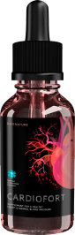
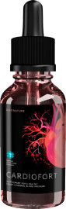

Giornale informativo
..


Incredibile scoperta: uno scienziato svizzero ha scoperto una ricetta unica per il trattamento delle malattie vascolari.
Malattie cardiovascolari già nel passato: scoperta la prima cura a livello mondiale basata su una formula unica di uno scienziato svizzero
Tra il 2020 e il 2021, l'Italia è scossa da una forte ondata di morti a causa di COVID-19. Nonostante i tentativi del Ministero della Salute di controllare la situazione, i medici si trovano di fronte a un forte aumento delle morti cardiovascolari.
Il problema in questione ha scosso la società, e noi non potevamo starne fuori. Cinque mesi fa, abbiamo lanciato un'inchiesta giornalistica per trovare la vera causa dell'aumento della mortalità. Da tempo stiamo raccogliendo informazioni aggiornate sulla ricerca attuale. Molti specialisti non volevano commentare la situazione, così abbiamo deciso di contattare i nostri colleghi stranieri - giornalisti dalla Svizzera.

L'epidemia di COVID-19 che ha scosso il mondo ha portato a nuove scoperte scientifiche. Uno scienziato svizzero che si dedica allo studio dei virus della sottoclasse dei coronavirus ha creato una soluzione unica. Secondo la comunità scientifica internazionale, la formula sarà una nuova pietra miliare nel trattamento delle malattie cardiovascolari, una delle principali minacce e pericolo per gli europei.
Oggi abbiamo invitato lo scienziato e cardiologo Paul Robert Vogt, che ha fatto questa scoperta straordinaria che salverà decine di migliaia di vite. Ci parla delle specificità delle malattie cardiovascolari e della sua scoperta.
“I vasi sono alla base del corpo”
Editoriale: Salve, dottor Vogt. Secondo molti esperti medici, le malattie cardiovascolari compaiono a tutti dopo i 40 anni. È vero?
Paul Robert Vogt: Salve. No, non è vero. La pressione alta e le malattie cardiovascolari non sono altro che segnali del corpo. Ci fa sapere che i meccanismi interni non funzionano come dovrebbero.
Cosa dice il medico quando un paziente si lamenta di una malattia cardiovascolare? Dice che la malattia è dovuta all'età e prescrive medicine per abbassare la pressione sanguigna. Ma questi farmaci non curano, cercano solo di sostenere il corpo. Io sostengo che le malattie cardiovascolari possono essere curate.. Bisogna solo capire la relazione tra i vasi sanguigni e i sistemi interni di una persona.
Editoriale: Sta dicendo che le malattie cardiovascolari scompariranno presto?
Paul Robert Vogt: No, non è possibile. Cambierà il percorso della malattia e il suo effetto sul corpo umano. Questo è l'aspetto innovativo della mia scoperta. Non parlo mai su dati non confermati: sono stati condotti studi importanti, abbiamo selezionato un focus group per studiare gli effetti del farmaco, di cui parlerò un po' più avanti.
Editoriale: Lo studio ha avuto successo?

Cuore sano
Infarto
Insufficienza cardiaca
Paul Robert Vogt: Sì, sono stato in grado di ottenere risultati sorprendenti. Nella fase di test, sono state prelevate 10 persone di diverse età. Alcuni di loro avevano sintomi primari di malattia cardiovascolare, altri avevano già una malattia delle arterie periferiche, una malattia vascolare cerebrale e altre. Per evitare la possibilità di avere dati imprecisi, ho selezionato persone con diversi stili di vita: persone che fumavano, persone che vivevano in città con una pessima ecologia, persone con un cattivo background genetico.
Ognuno dei 10 pazienti ha agito secondo la metodologia di cui sopra, e in 10 casi abbiamo avuto successo. Inoltre, ho seguito i pazienti che hanno partecipato allo studio del farmaco per un anno e mezzo. Tutti si sono liberati della loro malattia.
Editoriale: Prima hai detto che molti medici prescrivono farmaci che non funzionano. Qual è la ragione di questo?
Paul Robert Vogt: Il fatto è che le norme che regolano la prevenzione e il trattamento delle malattie cardiovascolari sono state sviluppate diversi anni fa. A quel tempo, la scienza non era tecnicamente in grado di determinare le tecniche ottimali. Ai pazienti sono stati prescritti e continuano ad essere prescritti farmaci classici che normalizzano temporaneamente la pressione sanguigna. E questi farmaci non combattono la causa ma l'effetto. Dovete capire che assumerli non risolve il problema in modo drammatico.
La mia pratica dimostra che nel 90% dei casi questo tipo di "trattamento" porta alla necessità di un intervento chirurgico. . Ho visto molte persone che sono state operate, ma non hanno ancora risolto il problema. Immaginatevi come si sente una persona che ha speso molti soldi in farmaci inefficaci, ha subito molte operazioni e rimane ancora nello stesso punto in termini di malattia. E in alcuni casi, il risultato può portare a un significativo deterioramento del benessere. Ho presentato i risultati di tutte le mie ricerche alla comunità scientifica internazionale. Più di 1.000 medici di tutto il mondo hanno potuto constatare che la mia formula funziona davvero. Per quanto ne so, il Ministero della Salute di 58 paesi sta ora discutendo l'introduzione del mio farmaco a livello statale nei programmi sanitari nazionali.

Foto di Paul Robert Vogt in un convegno internazionale di cardiologia
Editoriale: E i metodi universali? Ho sentito parlare dei benefici dei trattamenti di fisioterapia. Significa che sono inutili?
Paul Robert Vogt: No, funzionano. Ma il loro effetto è di breve durata. Riducono solo i sintomi, li mascherano. Sotto l'influenza di tali trattamenti, il nostro cervello riceve un segnale che tutto va bene. Naturalmente, la persona non sentirà vertigini, forti dolori, mancanza di ossigeno e altri sintomi. Ma, capite, questo aggrava il problema: mascherare i sintomi non è una cura. È semplicemente un auto-inganno.
Editoriale: Bene. Ora raccontateci la vostra scoperta. È davvero una svolta nel trattamento delle malattie cardiovascolari?
Paul Robert Vogt: Non mi definirei un pioniere. Vedete, all'inizio della mia carriera ero interessato alla medicina asiatica. Ho studiato i risultati dei suoi rappresentanti e ho individuato le tecniche con un alto grado di efficacia, che si basavano su ingredienti naturali.
In contrasto con i metodi classici, il prodotto Cardiofort che ho sviluppato è adattivo. Questo significa che si concentra sulla prevenzione e il trattamento di tutti i tipi di malattie cardiovascolari, si "adatta" alle caratteristiche individuali del corpo del paziente.
Ammetto che durante la fase di test, mi aspettavo che l'efficacia di Cardiofort fosse nell'ordine del 60%-70%. Ulteriori studi clinici hanno dimostrato che i miglioramenti sono stati visti in pazienti di ogni segmento.
 

Scissione delle placche di colesterolo
Editoriale: Quindi Cardiofort è un farmaco che può salvare e alleviare la sofferenza di migliaia di pazienti? È come una magia! Può raccontarci la storia della sua creazione?
Paul Robert Vogt: No, nessun miracolo, solo scienza. Dopo la pandemia di COVID-19, gli scienziati e i medici sono stati incaricati di studiare le caratteristiche di questo tipo di virus. Durante lo studio, ho scoperto i suoi fattori comportamentali.
Una volta che il virus entra nel corpo, il sistema immunitario umano inizia a produrre globuli bianchi, che sono cellule speciali del sangue. A volte riescono a difendersi, ma in molti casi il virus passa. Poi iniziano a inviare "segnali" attraverso il corpo, segnalando " il pericolo". Esse sono chiamate citochine.
Si tratta di molecole proteiche particolari che hanno un ruolo informativo. Una volta che appare questo segnale, la persona inizia a sentire tutti i sintomi della malattia. Più il virus si diffonde, più citochine il corpo produce. Ma poiché il sistema immunitario umano ha già iniziato il proprio processo attivo, le citochine iniziano a trasformarsi in sostanze pericolose per l'uomo. Dopo questo, cominciano a verificarsi delle complicazioni serie.
Editoriale: E cosa ha a che fare questo con Cardiofort ?
Paul Robert Vogt: La causa principale della malattia cardiovascolare è un problema della circolazione. Per esempio, l'ipertensione arteriosa porta a cambiamenti nelle pareti dei vasi sanguigni e al loro conseguente restringimento, mentre l'ipertensione provoca l'ispessimento delle pareti del cuore. Di conseguenza, l'obiettivo principale del trattamento è quello di normalizzare la circolazione.
Nello sviluppo del farmaco, mi sono basato sui dati dello studio COVID-19. Come con il virus, il farmaco consegna le giuste cellule del sangue ai vasi sanguigni, innescando il processo RGKL - la rigenerazione di cellule e tessuti usurati che spesso portano a blocchi nei vasi sanguigni.
Trattamento chirurgico delle ostruzioni
Placca aterosclerotica
Le ostruzioni vascolari richiedono una chirurgia costosa
Paul Robert Vogt: Per di più, l'afflusso di cellule del sangue come risultato del processo RGKL aiuta a liberare i vasi sanguigni dalle placche aterosclerotiche. Un'altra caratteristica è che le cellule del sangue saturano tutti i vasi del corpo, con una conseguente normalizzazione generale del flusso sanguigno.
In altre parole, il principio di azione di Cardiofort è radicalmente diverso da quello dei farmaci classici.
Editoriale: Chi può assumere Cardiofort ?
Paul Robert Vogt: In primo luogo, il farmaco ha un'efficacia scientificamente provata. Abbiamo condotto diverse fasi di ricerca, e l'efficacia è stata constatata in tutti gli interpellati nelle diverse fasi del trattamento. In secondo luogo, Cardiofort è ora raccomandato dai principali specialisti di cardiologia. In terzo luogo, non sono stati osservati effetti collaterali durante i test. Di conseguenza, posso definire Cardiofort come una medicina universale.
Editoriale: Secondo le istruzioni, è sufficiente usare il farmaco tre volte al giorno?
Paul Robert Vogt: Sì, è così. Vorrei sottolineare che i pazienti non dovrebbero aspettarsi un effetto dopo la prima dose. Questo è impossibile - solo i produttori dei farmaci fittizi lo promettono. Bisogna capire che il corpo ha bisogno di tempo per rinnovare i tessuti e le cellule vascolari. Quindi quei medici che promettono un effetto in un paio di giorni vi stanno ingannando!
I risultati reali possono essere attesi dopo due settimane di utilizzo. È durante questo periodo che la pressione sanguigna si normalizza e i sintomi primari vengono neutralizzati.. Durante le settimane successive, l'effetto si consolida e si intensifica, poiché nel corpo sono già apparse cellule sanguigne rinnovate. I risultati dei test mostrano che l'80% dei pazienti hanno percepito un miglioramento tra 14-20 giorni dopo aver cominciato a usare il farmaco.
Editoriale: Può mostrare dettagliatamente le statistiche?
Paul Robert Vogt: Certo, perché solo studi provati dimostrano l'efficacia di qualsiasi farmaco.
Normalizzazione della pressione arteriosa e della circolazione sanguigna
98,3% dei pazienti
Assenza di effetti cumulativi e collaterali
99,7% dei pazienti
Arresto della progressione e dello sviluppo delle malattieПриостановка прогрессирования и развития заболеваний
100% dei pazienti
Riduzione dei sintomi associati
99,5% dei pazienti
Normalizzazione dei processi biologici nel corpo
98,9% dei pazienti
Editoriale: Un augurio ai nostri lettori?
Paul Robert Vogt: vi do alcuni consigli utili. Cardiofort non è solo un prodotto, è un complesso completo composto da ingredienti naturali e nutrienti.
Le foglie di kumquat (fortunella).
Una delle colture erbacee più rare che cresce sulle pendici delle montagne Huashan e Taishan nel sud-est della Cina. La Fortunella è stata notata per le sue proprietà benefiche dai monaci buddisti cinesi nei manoscritti del XII secolo. Il componente è responsabile del processo RGRL, regola la rigenerazione delle cellule e dei tessuti usurati e pulisce i vasi sanguigni dalle sostanze tossiche.
Cardiaca.
Satura i vasi sanguigni con i nutrienti necessari per il normale funzionamento del sistema vascolare.
Estratto di oliva.
Ha un effetto antiossidante e antisettico.
Estratto di biancospino comune.
Normalizza la pressione sanguigna, neutralizza l'insufficienza cardiaca e l'aritmia e ha un effetto sedativo.
Luppolo comune.
Migliora la diffusione dei nutrienti attraverso i vasi sanguigni.
Come medico, sono molto contento di poter aiutare molte persone. Infine, vorrei augurare salute a tutti coloro che leggono questa intervista. Ricordate che la vostra salute è nelle vostre mani.
Poiché sono apparse online molte copie contraffatte del Cardiofort, i redattori, insieme al dottor Paul, hanno realizzato un modulo d'ordine direttamente su questo sito.


Commenti
João Vítor Gusmão L'altro ieri il mio medico mi ha raccomandato di prendere Cardiofort. Sono rimasto molto sorpreso da questa raccomandazione, perché non avevo mai sentito parlare di questa medicina prima. E oggi mi è capitato di vedere questa intervista. Dottore, grazie per la spiegazione dettagliata, ho intenzione di ordinare tre confezioni.
4
..
Salvati Filomena Avete già avuto la possibilità di ordinare? Volevo comprare per i miei parenti, ma ho paura che la consegna sarà lunga.
..
Maria Grazia Sartor È arrivato a me il giorno dopo e a mia madre tre giorni dopo. Penso che tutto dipenda dalla distanza da Roma.
..
Marco Giordanengo Maria Grazia, Sì, hai ragione. Ho controllato con l'operatore - l'ordine arriva entro 3 giorni.
..
Susana Navarrete Mio padre si lamentava della pressione alta e prendeva solo medicine per abbassarla. Dopo aver preso Cardiofort, la sua pressione sanguigna è sempre stata monitorata e finora è risultata a posto.
10
..
Francesco Oliva Posso prendere Cardiofort se la mia aritmia è causata dallo stress?
..
Giorgio Chierubini Francesco, ho avuto la stessa situazione e ho consultato il mio cardiologo. Ha detto che è ok
..
Maria Massari Testato Cardiofort nella mia esperienza personale. Mi è stata diagnosticata l'ipertensione arteriosa quando avevo 37 anni. Dopo un corso, il mio medico ha detto che c'era un miglioramento e quindi ha raccomandato un secondo corso del prodotto.
9
..
Pietro Carucci Potete dirmi come prenderlo?
..
Maria Massari Le istruzioni dicono di prendere 30 gocce due volte al giorno.
..
Carla Annovazzi Ho sentito parlare per la prima volta di Cardiofort sei mesi fa. Avevo problemi di aritmia. Non mi aspettavo alcun miglioramento, dato che altre medicine non hanno aiutato per più di un giorno. Finora l'effetto sta reggendo, quindi spero che continui.
43
..
Giorgio Cesano A causa della tensione sanguigna e del mal di testa, ho sofferto per un paio d'anni. L'unica cosa che mi ha aiutato per un po' sono stati i farmaci ipotensivi. Sto prendendo Cardiofort da tre settimane, ma posso constatare già dei miglioramenti. Chiederò al mio medico se posso fare diversi corsi.
69
..
Emanuela Girardi МPosso testimoniare di persona che ho preso questa medicina per due cicli. Ho avuto un effetto dopo il primo corso, ma il mio cardiologo mi ha consigliato di farlo durare di più.
..
Lucia Tammone Se c'è un leggero aumento della pressione, può essere corretto con Cardiofort?
..
Sergio Giustozzi Ho avuto una leggera anomalia nella mia pressione arteriosa e ho preso Cardiofort come profilassi. A poco a poco la mia pressione si è corretta.
..
Nino Colantoni Sono a metà del corso e i test hanno dato risultati positivi.
..